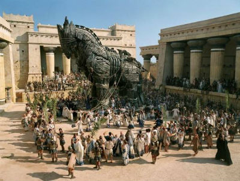
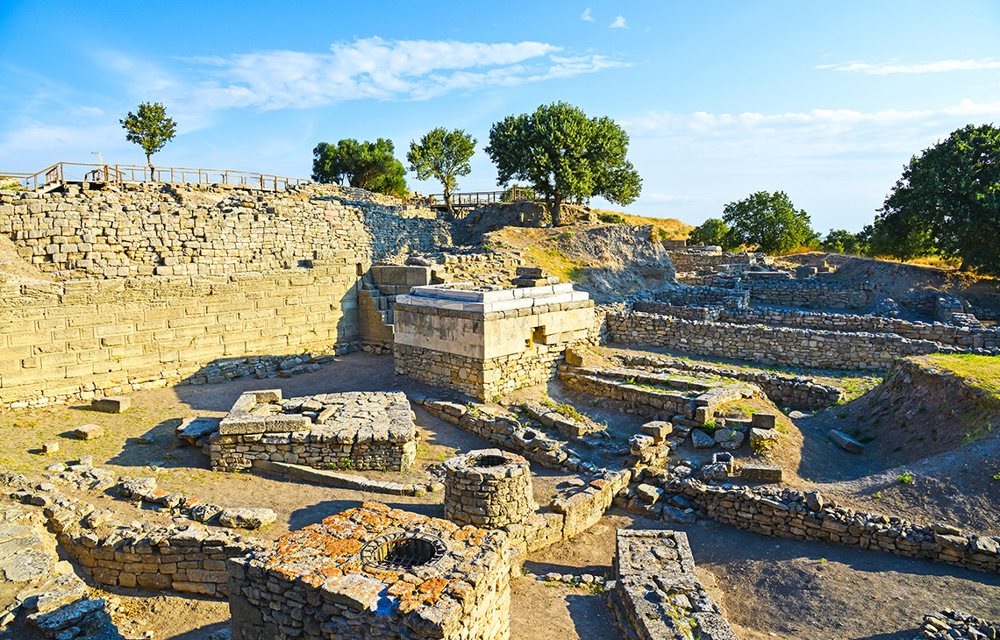
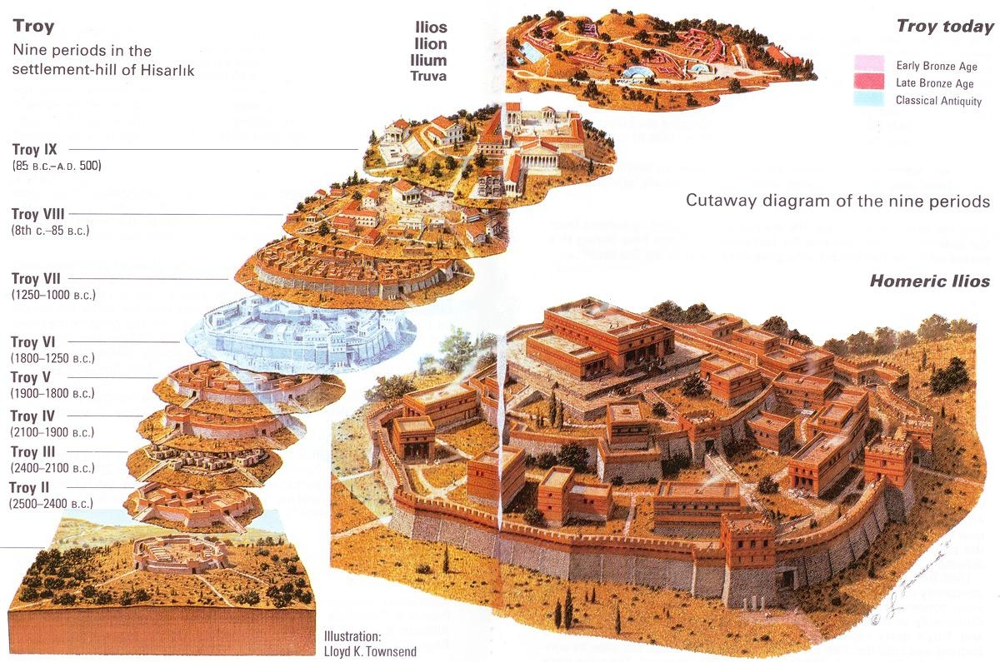

Название
Тро́я — древний город-крепость в Малой Азии на полуострове Троада у побережья Эгейского моря, на берегу лагуны у входа в Дарданеллы. Троянская война воспета в поэме «Илиада», автором которой считается Гомер. События, описанные Гомером, в нынешнем представлении историков относятся к крито-микенской эпохе. Народ, населявший Трою, в древнегреческих источниках именуется тевкрами. Руины Трои, обнаруженные в конце 1860-х гг. Генрихом Шлиманом при раскопках холма Гиссарлык (в 7 км от современного побережья), с 1998 г. занесены в список Всемирного наследия ЮНЕСКО. Гиссарлык расположен в современной турецкой провинции Чанаккале. Предположительно именно Илион именуется в хеттских источниках Вилуса (хетт. URUWi-lu-ša ). Ближайшие к Трое поселения в древности назывались Дардания и Скамандр.
Раскопки Трои
Среди современных Генриху Шлиману историков была распространена гипотеза о том, что Троя находилась на месте селения Бунарбаши. Тождество холма Гиссарлык с гомеровской Троей предположил в 1822 г. Чарлз Макларен. Сторонником его идей был Френк Калверт, который начал в Гиссарлыке раскопки за 7 лет до Шлимана. По иронии судьбы, участок холма Гиссарлык, принадлежавший Калверту, оказался в стороне от гомеровской Трои. Генрих Шлиман, который был знаком с Калвертом, начал целенаправленное исследование второй половины Гиссарлыкского холма в конце XIX века. Большинство находок Шлимана после Второй мировой войны было вывезено из Германии в СССР (см. трофейное искусство). Знаменитый клад Приама на протяжении десятилетий считался утраченным. Лишь в 1990-е гг. выяснилось, что обнаруженные Шлиманом артефакты хранятся в Пушкинском музее и в Государственном Эрмитаже. Последующие археологи обнаружили в Гиссарлыке следы девяти крепостей-поселений, существовавших в разные эпохи. Первое из найденных в Гиссарлыке поселений (так называемая Троя I) представляло собой крепость диаметром менее 100 м и, очевидно, существовало на протяжении длительного периода. К эпохе, описанной в «Илиаде», относится седьмой слой. В этот период Троя представляет собой обширное (площадью свыше 200 тыс.м²) поселение, обнесённое крепкими стенами с девятиметровыми башнями. После Шлимана раскопками в Гиссарлыке занимались Вильгельм Дёрпфельд, Карл Блеген и Манфред Корфман, который обнаружил вокруг холма останки нижнего города. Крупные раскопки 1988 года показали, что население города в гомеровскую эпоху составляло от шести до десяти тысяч жителей — по тем временам, весьма внушительное число. Согласно данным экспедиции Корфмана, площадь нижнего города была примерно 170 тыс.м², цитадели — 23 тыс.м² (что в 15 раз больше цифр, которые приводят предшественники Корфмана). Для привлечения туристов в 1970-е гг. на территории археологической зоны была воздвигнута полноразмерная модель Троянского коня. За плату желающие могут забраться внутрь.
Язык и письменность
Вопрос о языке Гектора и Приама занимал учёных с античности. Вместе с тем в слоях Гиссарлыка, относимых к бронзовому веку, письменные памятники долгое время не обнаруживались. Из хеттских источников известно, что в Вилусе для письма использовались деревянные, а не глиняные таблички[8]. Такие носители письма не отличаются долговечностью и неизбежно погибают при пожарах. В середине 1980-х гг. Н. Н. Казанский опубликовал несколько обломков глиняных сосудов из Трои с непонятными знаками, напоминавшими критское письмо: он назвал эти знаки троянским письмом. По мнению большинства специалистов, это не надписи, а лишь подражание письменности. В 1995 г. в слоях Трои VII была обнаружена печать с лувийскими иероглифами[9]. В сочетании с последними данными о том, что имена Приама и других троянских героев скорее всего имеют лувийское происхождение, в научном мире всё более укореняется мнение о том, что древние троянцы говорили на лувийском наречии. В выпущенной в 2004 году Оксфордским университетом монографии Иоахим Латач[en] приходит к выводу, что лувийский язык был официальным языком гомеровской Трои. Вопрос о повседневном языке троянцев пока остаётся открытым. Несмотря на это, Троя находилась под сильным эллинским влиянием, многие знатные троянцы параллельно носили местные и греческие имена (например, Парис одновременно носил имя Александр). Тот факт, что греческие имена троянцев не являются выдумкой Гомера, подтверждают хеттские надписи, упоминающие Алаксанду (то есть Александра) и других правителей Таруисы (Вилусы).